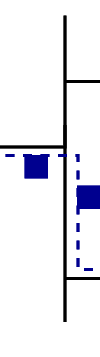

Quelques mots sur la topologie des réseaux
Dans le réseau schématisé à droite du nuage de notre running example, ou dans celui de la section précédente, il n'y a pas de boucles. En théorie des graphes, on dit que le graphe du réseau est acyclique, ou est un arbre (cela vous rappelle le cours algorithmique et programmation de 1A ? C'est normal ... nous parlons ici des mêmes arbres). Dans un réseau sans boucles, il existe un chemin unique entre chaque paire de noeuds. L'algorithme consultant la table de routage doit seulement veiller à ce que chaque destination apparaît bien dans ses tables d'acheminement. Pour l'instant et au stade de vos connaissances, la question du choix entre des voies alternatives ne se pose pas. Cependant, sans boucles, il n'y a pas de redondance de chemin possible. Dans un arbre, un lien indisponible partitionnera le réseau en deux parties distinctes qui ne peuvent pas communiquer entre-elles. La redondance est pourtant une bonne chose, cependant, elle amène son lot de problèmes et complexifie les décisions de routage à cause des multiples chemins qui existent vers une destination. Considérons un instant le réseau suivant :

Supposons que S1 propose S2 ou S3 comme prochain saut (next hop) pour atteindre B. Les deux chemins A─S1─S2─S4─B et A─S1─S3─S4─B sont valides et il n'y a donc pas de "bonne réponse". En effet, même si un chemin est "plus rapide" que l'autre, le chemin le moins performant n'est pas forcément le plus mauvais (surtout si celui-ci est moins coûteux). Il faudrait donc définir un protocole qui fournirait un mécanisme de décision avec lequel S1 pourrait faire un choix. La méthode la plus simple restant évidemment celle qui consiste à choisir le premier trouvé dans la table. Cependant, il serait plus intéressant de mettre en place un protocole qui assurerait que : si la route annoncée par défaut est que S1 atteint B via S2, mais que le lien S2─S4 est indisponible, alors S1 choisit automatiquement la route S1─S3─S4─B.
De nombreux LAN (en particulier Ethernet) préfèrent les réseaux en arbre, donc sans redondance possible, alors qu'il existe au niveau de la couche IP des protocoles de routage complexes qui permettent le support de la redondance (par exemple le protocole VRRP spécifié en RFC3768).